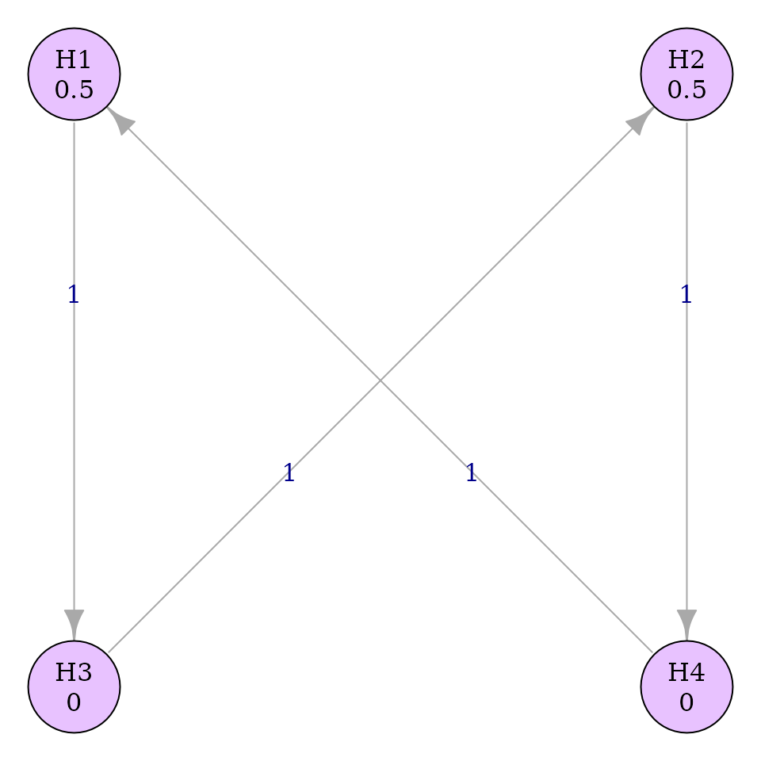
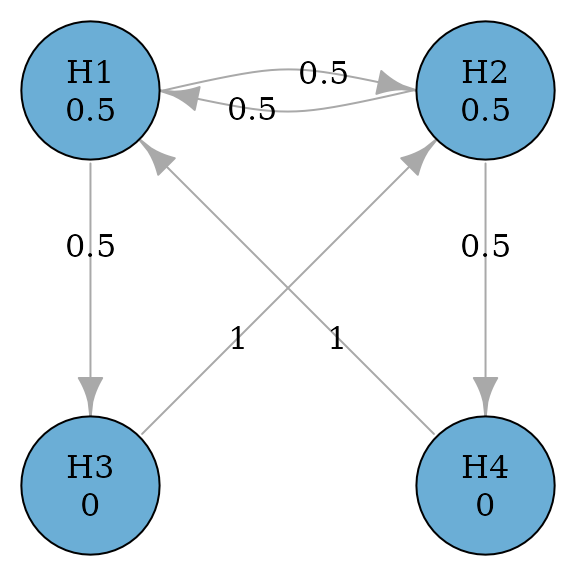
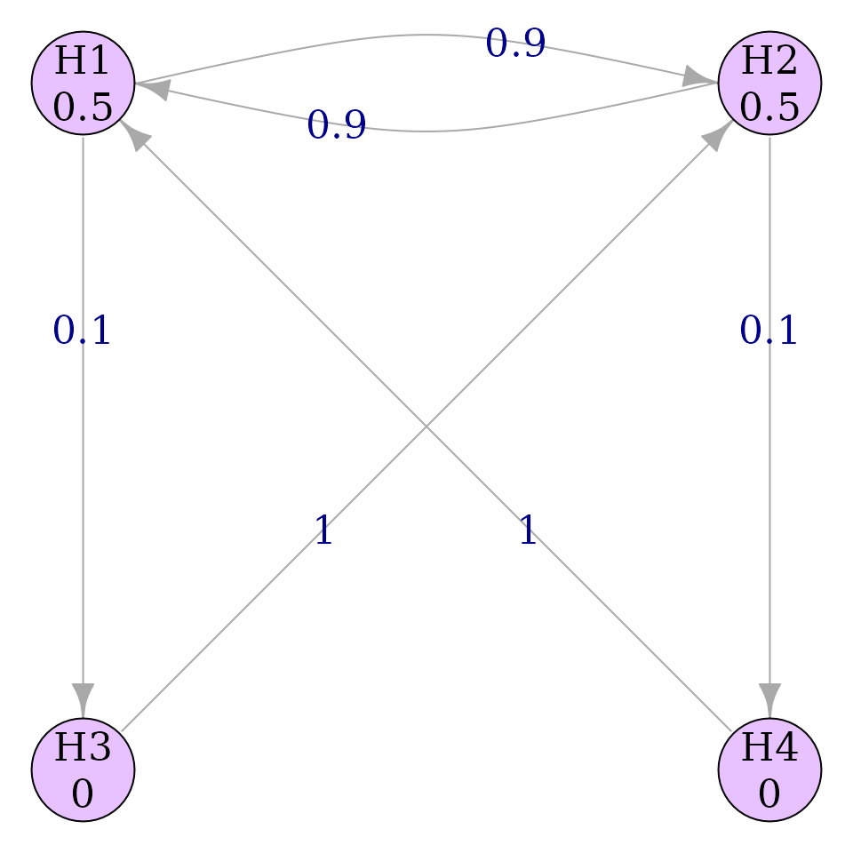
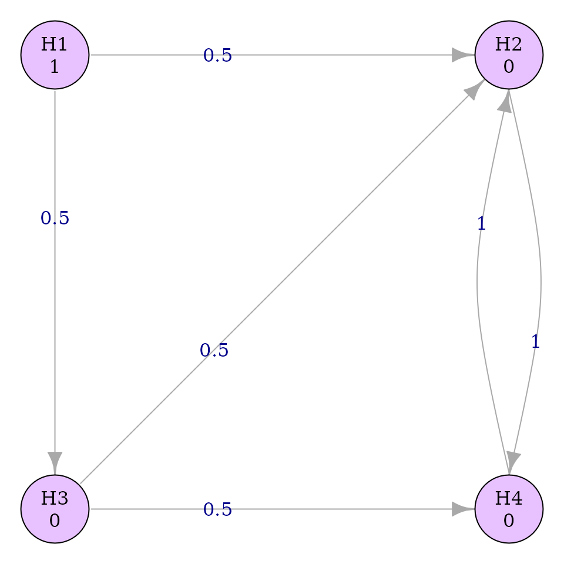

Introduction
Any valid graph can be made with graph_create(), but
some patterns have been established over time. We demonstrate how to run
some of these patterns with graphicalMCP.
Bonferroni-Holm
transitions <- matrix(1 / 4, 5, 5)
diag(transitions) <- 0
bonferroni_holm_graph <- graph_create(rep(1 / 5, 5), transitions)
plot(bonferroni_holm_graph)
Simplel successive
simple_successive_graph <- graph_create(
c(.5, .5, 0, 0),
rbind(
c(0, 0, 1, 0),
c(0, 0, 0, 1),
c(0, 1, 0, 0),
c(1, 0, 0, 0)
)
)
plot(simple_successive_graph, layout = "grid", nrow = 2)
General successive graphs are a good example where multiple variations may be useful with slight differences in starting edge weights. Variable edge weights are not currently supported, but they can be done for a particular graph with a light wrapper.
simple_successive_var <- function(gamma) {
graph_create(
c(.5, .5, 0, 0),
rbind(
c(0, gamma, 1 - gamma, 0),
c(gamma, 0, 0, 1 - gamma),
c(0, 1, 0, 0),
c(1, 0, 0, 0)
)
)
}Then multiple variations can be created and compared easily.
plot(
simple_successive_var(.75),
layout = "grid",
nrow = 2,
vertex.label.cex = .7,
edge.label.cex = .7
)
plot(
simple_successive_var(.9),
layout = "grid",
nrow = 2,
vertex.label.cex = .7,
edge.label.cex = .7
)
Huque-Alosh-Bhore (2011)
hab_2011_graph <- graph_create(
c(1, 0, 0, 0),
rbind(
c(0, .5, .5, 0),
c(0, 0, 0, 1),
c(0, .5, 0, .5),
c(0, 1, 0, 0)
)
)
plot(hab_2011_graph, layout = "grid")
Wiens-Dmitrienko (2005)
wd_2005_graph <- graph_create(
c(1 / 3, 1 / 3, 1 / 3),
rbind(
c(0, 1, 0),
c(0, 0, 1),
c(.5, .5, 0)
)
)
plot(wd_2005_graph, layout = "grid", nrow = 1, asp = .1, edge_curves = c(pairs = -6, "H3|H1" = -6))